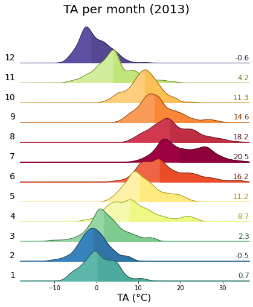
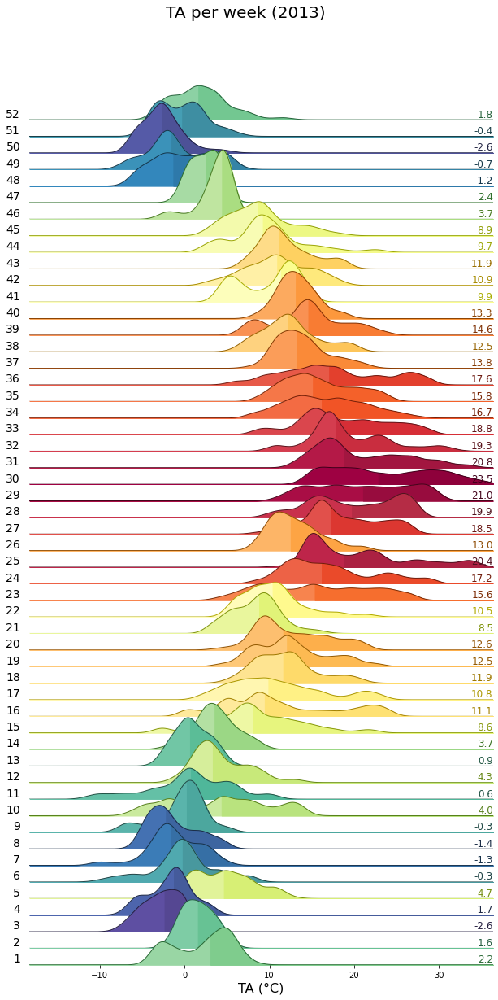

Meteo: Air temperature (TA) (2005-2024)#
Author: Lukas Hörtnagl (holukas@ethz.ch)
Variable#
varname = 'TA_T1_47_1_gfXG'
var = "TA" # Name shown in plots
units = "°C"
Imports#
import importlib.metadata
import warnings
from datetime import datetime
from pathlib import Path
import pandas as pd
import matplotlib.pyplot as plt
import matplotlib.gridspec as gridspec
import diive as dv
from diive.core.io.files import save_parquet, load_parquet
from diive.core.plotting.cumulative import CumulativeYear
from diive.core.plotting.bar import LongtermAnomaliesYear
warnings.filterwarnings(action='ignore', category=FutureWarning)
warnings.filterwarnings(action='ignore', category=UserWarning)
version_diive = importlib.metadata.version("diive")
print(f"diive version: v{version_diive}")
diive version: v0.87.0
Load data#
SOURCEDIR = r"../10_METEO"
FILENAME = r"12.3_METEO_GAPFILLED_2004-2024.parquet"
FILEPATH = Path(SOURCEDIR) / FILENAME
df = load_parquet(filepath=FILEPATH)
keeplocs = (df.index.year >= 2005) & (df.index.year <= 2024)
df = df[keeplocs].copy()
df
Loaded .parquet file ..\10_METEO\12.3_METEO_GAPFILLED_2004-2024.parquet (0.024 seconds).
--> Detected time resolution of <30 * Minutes> / 30min
| LW_IN_T1_47_1 | PA_T1_47_1 | PPFD_IN_T1_47_1 | RH_T1_47_1 | SW_IN_T1_47_1 | TA_T1_47_1 | SW_IN_T1_47_1_gfXG | TA_T1_47_1_gfXG | PPFD_IN_T1_47_1_gfXG | |
|---|---|---|---|---|---|---|---|---|---|
| TIMESTAMP_MIDDLE | |||||||||
| 2005-01-01 00:15:00 | NaN | NaN | 0.0 | 96.203705 | 0.0 | -2.160000 | 0.0 | -2.160000 | 0.0 |
| 2005-01-01 00:45:00 | NaN | NaN | 0.0 | 98.003701 | 0.0 | -2.010000 | 0.0 | -2.010000 | 0.0 |
| 2005-01-01 01:15:00 | NaN | NaN | 0.0 | 98.203705 | 0.0 | -1.791000 | 0.0 | -1.791000 | 0.0 |
| 2005-01-01 01:45:00 | NaN | NaN | 0.0 | 98.203705 | 0.0 | -1.539000 | 0.0 | -1.539000 | 0.0 |
| 2005-01-01 02:15:00 | NaN | NaN | 0.0 | 98.203705 | 0.0 | -1.338000 | 0.0 | -1.338000 | 0.0 |
| ... | ... | ... | ... | ... | ... | ... | ... | ... | ... |
| 2024-12-31 21:45:00 | 232.595527 | 94.211806 | 0.0 | 87.254008 | 0.0 | -0.504794 | 0.0 | -0.504794 | 0.0 |
| 2024-12-31 22:15:00 | 232.609777 | 94.189013 | 0.0 | 87.430236 | 0.0 | -0.296828 | 0.0 | -0.296828 | 0.0 |
| 2024-12-31 22:45:00 | 232.345020 | 94.169525 | 0.0 | 89.787920 | 0.0 | -0.392922 | 0.0 | -0.392922 | 0.0 |
| 2024-12-31 23:15:00 | 234.211100 | 94.168413 | 0.0 | 81.809355 | 0.0 | 0.792661 | 0.0 | 0.792661 | 0.0 |
| 2024-12-31 23:45:00 | 231.760533 | 94.170793 | 0.0 | 88.311314 | 0.0 | -0.422600 | 0.0 | -0.422600 | 0.0 |
350640 rows × 9 columns
series = df[varname].copy()
series
TIMESTAMP_MIDDLE
2005-01-01 00:15:00 -2.160000
2005-01-01 00:45:00 -2.010000
2005-01-01 01:15:00 -1.791000
2005-01-01 01:45:00 -1.539000
2005-01-01 02:15:00 -1.338000
...
2024-12-31 21:45:00 -0.504794
2024-12-31 22:15:00 -0.296828
2024-12-31 22:45:00 -0.392922
2024-12-31 23:15:00 0.792661
2024-12-31 23:45:00 -0.422600
Freq: 30min, Name: TA_T1_47_1_gfXG, Length: 350640, dtype: float64
xlabel = f"{var} ({units})"
xlim = [series.min(), series.max()]
Stats#
Overall mean#
_yearly_avg = series.resample('YE').mean()
_overall_mean = _yearly_avg.mean()
_overall_sd = _yearly_avg.std()
print(f"Overall mean: {_overall_mean} +/- {_overall_sd}")
Overall mean: 8.9549543810582 +/- 1.3482554138577252
Yearly means#
ym = series.resample('YE').mean()
ym
TIMESTAMP_MIDDLE
2005-12-31 7.429217
2006-12-31 7.960293
2007-12-31 8.109144
2008-12-31 7.588395
2009-12-31 7.948623
2010-12-31 6.803609
2011-12-31 8.786543
2012-12-31 7.823660
2013-12-31 7.106809
2014-12-31 8.703434
2015-12-31 8.736166
2016-12-31 9.558060
2017-12-31 9.759068
2018-12-31 10.702271
2019-12-31 10.291331
2020-12-31 10.504883
2021-12-31 9.056597
2022-12-31 11.120893
2023-12-31 10.765006
2024-12-31 10.345086
Freq: YE-DEC, Name: TA_T1_47_1_gfXG, dtype: float64
ym.sort_values(ascending=False)
TIMESTAMP_MIDDLE
2022-12-31 11.120893
2023-12-31 10.765006
2018-12-31 10.702271
2020-12-31 10.504883
2024-12-31 10.345086
2019-12-31 10.291331
2017-12-31 9.759068
2016-12-31 9.558060
2021-12-31 9.056597
2011-12-31 8.786543
2015-12-31 8.736166
2014-12-31 8.703434
2007-12-31 8.109144
2006-12-31 7.960293
2009-12-31 7.948623
2012-12-31 7.823660
2008-12-31 7.588395
2005-12-31 7.429217
2013-12-31 7.106809
2010-12-31 6.803609
Name: TA_T1_47_1_gfXG, dtype: float64
Monthly averages#
seriesdf = pd.DataFrame(series)
seriesdf['MONTH'] = seriesdf.index.month
seriesdf['YEAR'] = seriesdf.index.year
monthly_avg = seriesdf.groupby(['YEAR', 'MONTH'])[varname].mean().unstack()
monthly_avg
| MONTH | 1 | 2 | 3 | 4 | 5 | 6 | 7 | 8 | 9 | 10 | 11 | 12 |
|---|---|---|---|---|---|---|---|---|---|---|---|---|
| YEAR | ||||||||||||
| 2005 | -1.798928 | -3.298467 | 3.613463 | 7.327779 | 11.914164 | 16.726858 | 16.591920 | 14.460255 | 13.816814 | 9.833265 | 2.185859 | -2.926974 |
| 2006 | -4.194532 | -2.299361 | 0.443276 | 6.594224 | 11.012580 | 16.028185 | 21.033602 | 12.454961 | 15.517356 | 11.289903 | 6.052256 | 0.996613 |
| 2007 | 1.831280 | 2.950667 | 3.866424 | 12.747250 | 12.409842 | 14.977545 | 15.420882 | 15.238803 | 11.221396 | 7.458473 | 0.789296 | -1.865884 |
| 2008 | 1.498027 | 2.287706 | 1.880655 | 5.617952 | 13.469550 | 15.097302 | 16.143572 | 15.790118 | 10.281068 | 7.840179 | 2.565744 | -1.649615 |
| 2009 | -3.974498 | -1.601780 | 1.854548 | 10.023973 | 13.505490 | 14.196945 | 16.561570 | 18.342514 | 13.991227 | 7.741110 | 5.356225 | -1.158283 |
| 2010 | -4.242044 | -1.379788 | 2.465842 | 8.187206 | 9.017224 | 15.094503 | 18.229335 | 15.085477 | 11.608217 | 7.024903 | 2.883811 | -2.782696 |
| 2011 | -0.923986 | 1.041491 | 4.759064 | 11.375054 | 13.705819 | 14.686286 | 14.439601 | 17.685672 | 14.965174 | 7.767536 | 4.262686 | 1.251798 |
| 2012 | -0.385405 | -5.501142 | 7.017484 | 6.471191 | 12.224344 | 15.266384 | 15.645665 | 17.539556 | 12.566301 | 8.192080 | 4.585683 | -0.352892 |
| 2013 | -1.854887 | -3.664084 | 0.365234 | 6.492476 | 8.224684 | 13.956154 | 19.142624 | 16.977072 | 12.762685 | 9.517883 | 1.539382 | 0.984121 |
| 2014 | 1.166215 | 1.926494 | 5.892282 | 8.911640 | 10.221405 | 16.247756 | 15.719818 | 14.138015 | 13.661444 | 10.812444 | 4.943577 | 0.433012 |
| 2015 | -0.440557 | -2.097140 | 4.544967 | 8.231290 | 11.547104 | 15.871719 | 20.327214 | 18.712603 | 11.211259 | 6.926023 | 5.430528 | 3.707700 |
| 2016 | 0.890098 | 2.837591 | 4.041670 | 8.268441 | 12.593452 | 15.919292 | 19.398752 | 19.365958 | 17.255841 | 8.328448 | 4.340064 | 1.267124 |
| 2017 | -3.730232 | 3.588457 | 8.196496 | 8.314217 | 14.401430 | 19.210224 | 18.936156 | 19.645432 | 12.807543 | 11.445372 | 3.735386 | 0.123475 |
| 2018 | 3.651935 | -2.672235 | 3.066301 | 13.204716 | 14.698813 | 17.746751 | 20.973403 | 20.693080 | 16.709867 | 11.710273 | 5.212166 | 2.462536 |
| 2019 | -0.989104 | 4.319631 | 6.510257 | 8.886606 | 10.056998 | 19.499712 | 20.484599 | 19.035565 | 14.931494 | 11.209238 | 6.008235 | 3.228077 |
| 2020 | 2.249733 | 5.005212 | 5.196607 | 12.761152 | 13.198056 | 15.644990 | 19.662248 | 19.723812 | 16.071764 | 8.949485 | 5.625622 | 1.875873 |
| 2021 | -0.506040 | 4.147604 | 5.117351 | 7.316763 | 9.631604 | 18.450182 | 17.368270 | 16.548159 | 16.255653 | 9.689530 | 2.887954 | 1.577205 |
| 2022 | 0.922858 | 3.473913 | 7.477323 | 8.347545 | 15.615285 | 19.285291 | 21.095167 | 20.425183 | 13.606485 | 14.086912 | 6.538461 | 1.942527 |
| 2023 | 1.527202 | 3.165265 | 6.046677 | 6.899131 | 13.109495 | 19.705106 | 19.507541 | 19.522261 | 18.653598 | 13.107932 | 4.396678 | 3.016453 |
| 2024 | 1.331627 | 5.929059 | 7.444291 | 9.292731 | 12.905508 | 16.810613 | 19.461952 | 20.934985 | 13.727278 | 11.096496 | 4.329863 | 0.681400 |
Number of days below 0°C#
plotdf = df[[varname]].copy()
plotdf = plotdf.resample('D').min()
belowzero = plotdf.loc[plotdf[varname] < 0].copy()
belowzero = belowzero.groupby(belowzero.index.year).count()
belowzero["YEAR"] = belowzero.index
belowzero
belowzero.plot.bar(x="YEAR", y=varname, title=f"Number of days with {varname} < 0°");
display(belowzero)
print(f"Average per year: {belowzero[varname].mean()} +/- {belowzero[varname].std():.2f} SD")
| TA_T1_47_1_gfXG | YEAR | |
|---|---|---|
| TIMESTAMP_MIDDLE | ||
| 2005 | 112 | 2005 |
| 2006 | 109 | 2006 |
| 2007 | 81 | 2007 |
| 2008 | 100 | 2008 |
| 2009 | 107 | 2009 |
| 2010 | 116 | 2010 |
| 2011 | 83 | 2011 |
| 2012 | 91 | 2012 |
| 2013 | 128 | 2013 |
| 2014 | 76 | 2014 |
| 2015 | 87 | 2015 |
| 2016 | 83 | 2016 |
| 2017 | 82 | 2017 |
| 2018 | 67 | 2018 |
| 2019 | 61 | 2019 |
| 2020 | 59 | 2020 |
| 2021 | 83 | 2021 |
| 2022 | 63 | 2022 |
| 2023 | 60 | 2023 |
| 2024 | 50 | 2024 |
Average per year: 84.9 +/- 21.63 SD
Number of days above 30°C#
plotdf = df[[varname]].copy()
plotdf = plotdf.resample('D').max()
above = plotdf.loc[plotdf[varname] > 30].copy()
above = above.groupby(above.index.year).count()
above["YEAR"] = above.index
above.plot.bar(x="YEAR", y=varname, title=f"Number of days with {varname} > 30°");
display(above)
print(f"Average per year: {above[varname].mean()} +/- {above[varname].std():.2f} SD")
| TA_T1_47_1_gfXG | YEAR | |
|---|---|---|
| TIMESTAMP_MIDDLE | ||
| 2005 | 1 | 2005 |
| 2006 | 2 | 2006 |
| 2010 | 2 | 2010 |
| 2011 | 1 | 2011 |
| 2012 | 1 | 2012 |
| 2013 | 3 | 2013 |
| 2014 | 1 | 2014 |
| 2015 | 8 | 2015 |
| 2016 | 5 | 2016 |
| 2017 | 4 | 2017 |
| 2018 | 8 | 2018 |
| 2019 | 9 | 2019 |
| 2020 | 4 | 2020 |
| 2022 | 10 | 2022 |
| 2023 | 10 | 2023 |
| 2024 | 5 | 2024 |
Average per year: 4.625 +/- 3.36 SD
Heatmap plots#
Half-hourly#
fig, axs = plt.subplots(ncols=1, figsize=(6, 12), dpi=72, layout="constrained")
dv.heatmapdatetime(series=series, ax=axs, cb_digits_after_comma=0).plot()
Monthly#
fig, axs = plt.subplots(ncols=4, figsize=(21, 7), dpi=120, layout="constrained")
fig.suptitle(f'Per month', fontsize=32)
dv.heatmapyearmonth(series_monthly=series.resample('M').mean(), title="monthly mean", ax=axs[0], cb_digits_after_comma=0, zlabel="monthly mean").plot()
dv.heatmapyearmonth(series_monthly=series.resample('M').min(), title="monthly minimum", ax=axs[1], cb_digits_after_comma=0, zlabel="monthly minimum").plot()
dv.heatmapyearmonth(series_monthly=series.resample('M').max(), title="monthly maximum", ax=axs[2], cb_digits_after_comma=0, zlabel="monthly maximum").plot()
_range = series.resample('M').max().sub(series.resample('M').min())
dv.heatmapyearmonth(series_monthly=_range, title="monthly range", ax=axs[3], cb_digits_after_comma=0, zlabel="monthly range").plot()
Monthly ranks#
# Figure
fig = plt.figure(facecolor='white', figsize=(17, 6))
# Gridspec for layout
gs = gridspec.GridSpec(1, 4) # rows, cols
gs.update(wspace=0.35, hspace=0.3, left=0.03, right=0.97, top=0.97, bottom=0.03)
ax_mean = fig.add_subplot(gs[0, 0])
ax_mean_ranks = fig.add_subplot(gs[0, 1])
ax_max = fig.add_subplot(gs[0, 2])
ax_max_ranks = fig.add_subplot(gs[0, 3])
params = {'axlabels_fontsize': 10, 'ticks_labelsize': 10, 'cb_labelsize': 10}
dv.heatmapyearmonth_ranks(ax=ax_mean, series=series, agg='mean', ranks=False, zlabel="°C", cmap="RdYlBu_r", show_values=True, **params).plot()
hm_mean_ranks = dv.heatmapyearmonth_ranks(ax=ax_mean_ranks, series=series, agg='mean', show_values=True, **params)
hm_mean_ranks.plot()
dv.heatmapyearmonth_ranks(ax=ax_max, series=series, agg='max', ranks=False, zlabel="°C", cmap="RdYlBu_r", show_values=True, **params).plot()
dv.heatmapyearmonth_ranks(ax=ax_max_ranks, series=series, agg='max', show_values=True, **params).plot()
ax_mean.set_title("Air temperature mean", color='black')
ax_mean_ranks.set_title("Air temperature mean: ranks", color='black')
ax_max.set_title("Air temperature max", color='black')
ax_max_ranks.set_title("Air temperature max: ranks", color='black')
ax_mean.tick_params(left=True, right=False, top=False, bottom=True,
labelleft=True, labelright=False, labeltop=False, labelbottom=True)
ax_mean_ranks.tick_params(left=True, right=False, top=False, bottom=True,
labelleft=False, labelright=False, labeltop=False, labelbottom=True)
ax_max.tick_params(left=True, right=False, top=False, bottom=True,
labelleft=False, labelright=False, labeltop=False, labelbottom=True)
ax_max_ranks.tick_params(left=True, right=False, top=False, bottom=True,
labelleft=False, labelright=False, labeltop=False, labelbottom=True)
ax_mean_ranks.set_ylabel("")
ax_max.set_ylabel("")
ax_max_ranks.set_ylabel("")
fig.show()
Mean ranks per year#
hm_mean_ranks.hm.get_plot_data().mean(axis=1).plot(title="Mean ranks per year");
Ridgeline plots#
Yearly#
rp = dv.ridgeline(series=series)
rp.plot(
how='yearly',
kd_kwargs=None, # params from scikit KernelDensity as dict
xlim=xlim, # min/max as list
ylim=[0, 0.07], # min/max as list
hspace=-0.8, # overlap between months
xlabel=f"{var} ({units})",
fig_width=5,
fig_height=9,
shade_percentile=0.5,
show_mean_line=False,
fig_title=f"{var} per year",
fig_dpi=72,
showplot=True,
ascending=False
)
Monthly#
rp.plot(
how='monthly',
kd_kwargs=None, # params from scikit KernelDensity as dict
xlim=xlim, # min/max as list
ylim=[0, 0.14], # min/max as list
hspace=-0.6, # overlap between months
xlabel=f"{var} ({units})",
fig_width=4.5,
fig_height=8,
shade_percentile=0.5,
show_mean_line=False,
fig_title=f"{var} per month (2005-2024)",
fig_dpi=72,
showplot=True,
ascending=False
)
Weekly#
rp.plot(
how='weekly',
kd_kwargs=None, # params from scikit KernelDensity as dict
xlim=xlim, # min/max as list
ylim=[0, 0.15], # min/max as list
hspace=-0.6, # overlap
xlabel=f"{var} ({units})",
fig_width=6,
fig_height=16,
shade_percentile=0.5,
show_mean_line=False,
fig_title=f"{var} per week (2005-2024)",
fig_dpi=72,
showplot=True,
ascending=False
)
Single years per month#
uniq_years = series.index.year.unique()
for uy in uniq_years:
series_yr = series.loc[series.index.year == uy].copy()
rp = dv.ridgeline(series=series_yr)
rp.plot(
how='monthly',
kd_kwargs=None, # params from scikit KernelDensity as dict
xlim=xlim, # min/max as list
ylim=[0, 0.18], # min/max as list
hspace=-0.6, # overlap
xlabel=f"{var} ({units})",
fig_width=6,
fig_height=7,
shade_percentile=0.5,
show_mean_line=False,
fig_title=f"{var} per month ({uy})",
fig_dpi=72,
showplot=True,
ascending=False
)


Single years per week#
uniq_years = series.index.year.unique()
for uy in uniq_years:
series_yr = series.loc[series.index.year == uy].copy()
rp = dv.ridgeline(series=series_yr)
rp.plot(
how='weekly',
kd_kwargs=None, # params from scikit KernelDensity as dict
xlim=xlim, # min/max as list
ylim=[0, 0.3], # min/max as list
hspace=-0.8, # overlap
xlabel=f"{var} ({units})",
fig_width=9,
fig_height=18,
shade_percentile=0.5,
show_mean_line=False,
fig_title=f"{var} per week ({uy})",
fig_dpi=72,
showplot=True,
ascending=False
)

Cumulative plot#
CumulativeYear(
series=series,
series_units=units,
start_year=2005,
end_year=2024,
show_reference=True,
excl_years_from_reference=None,
highlight_year=2024,
highlight_year_color='#F44336').plot();
Long-term anomalies#
series_yearly_mean = series.resample('YE').mean()
series_yearly_mean.index = series_yearly_mean.index.year
series_label = f"CH-CHA: {varname}"
LongtermAnomaliesYear(series=series_yearly_mean,
series_label=series_label,
series_units=units,
reference_start_year=2005,
reference_end_year=2024).plot()
End of notebook#
dt_string = datetime.now().strftime("%Y-%m-%d %H:%M:%S")
print(f"Finished. {dt_string}")
Finished. 2025-06-11 16:45:15